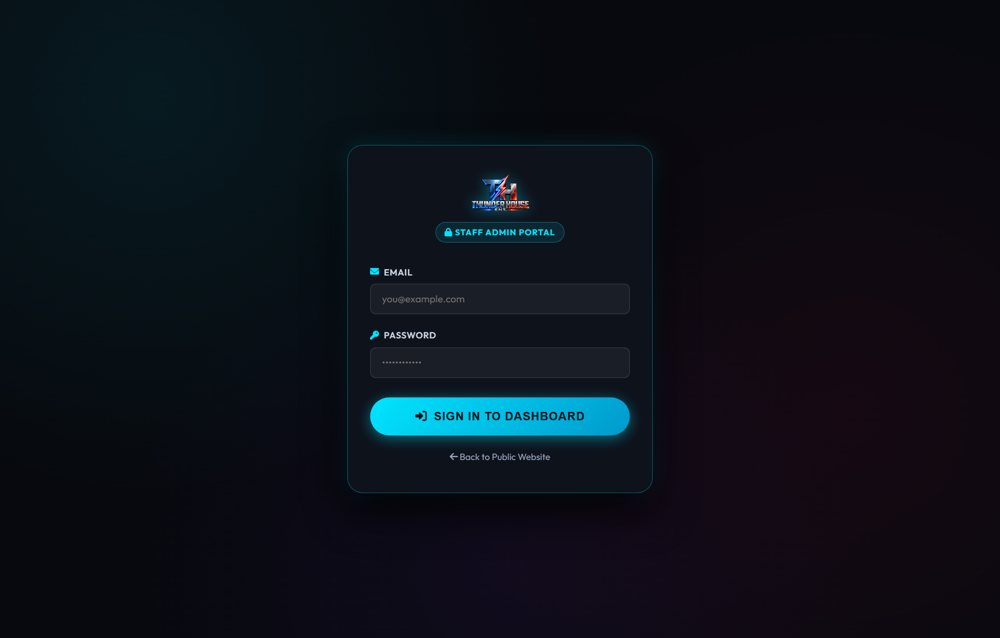

Today's Command Dashboard & Daily Operational Triage
Located at admin/today.html, the Command Dashboard is the operational cockpit of Thunder House ENT. Every staff member begins their working shift here to triage urgent inquiries, review upcoming gigs, monitor revenue metrics, and inspect the latest music drops.
1. The Daily Morning Operational Routine
Before checking personal email or messaging clients, every team member must execute the 3-Step Morning Triage Protocol on the Today screen:

admin/today.html. Notice the top two primary quadrants: Needs Action (left) and Next Gig Countdown (right).
The Needs Action section programmatically queries the database and sorts pending tasks strictly by time sensitivity:
- Expiring Holds: Any quote hold with fewer than 24 hours remaining is flagged in pink. Staff can send a quick personal text or call to answer questions before the date releases.
- Unsigned Contracts: Booked gigs without an e-signature are surfaced so contracts can be executed.
- Outstanding Balances: Gigs within 14 days of performance date with an unpaid balance are prioritized for balance reminders.
The right-hand card highlights the immediate upcoming event on our production calendar, displaying the venue name, performance date, and a 4-item readiness checklist:
- Retainer & Date Lock: Confirms $200 deposit received.
- Contract Execution: Confirms digital contract e-signed.
- Song List & Guest Requests: Confirms the client submitted their portal playlist and VIP moments.
- Gear Pack Staged: Confirms equipment has been staged and scanned in the studio.
A quick glance at the Automation Status Strip confirms that all 8 background schedulers and scrapers ran smoothly overnight, and the Fresh Drops widget displays this week's new club and radio releases.
2. Sales Pipeline & Revenue KPIs
Directly beneath the triage cards sits the Pipeline Overview Strip and financial KPI metrics:
- New Inquiries: Uncontacted website leads submitted within the past 24 hours.
- Quoted: Inquiries where custom pricing has been shared with the client.
- On Hold: Events currently protected by the 72-hour date hold window.
- Booked: Confirmed gigs with retainer paid and contracts locked.
- Monthly Revenue Targets: Displays current month collected funds, outstanding balances owed, and open weekend performance slots remaining in the next 60 days.
3. The Fresh Drops Hot Crate Widget
DJs must always stay ahead of musical trends. The Today dashboard integrates a live widget connected directly to our automated Music Scout Engine:

Interactive Controls Available on Every Track:
- Clean (Radio Edit) Button: Click the green
Cleanbutton to play the radio-safe version in your headphones or laptop speakers. - Dirty (Club Edit) Button: Click the red
Dirtybutton to audition the uncut explicit festival version. - The Floating Cyber Audio Dock: Playing any song summons the bottom audio dock with animated visualizer, seek scrubber, 10s skip, and a 1-click download button.
- Artist Research Chips: Click the branded badges under the artist name to inspect their official SoundCloud, Instagram, TikTok, or website before adding the track to a weekend crate.